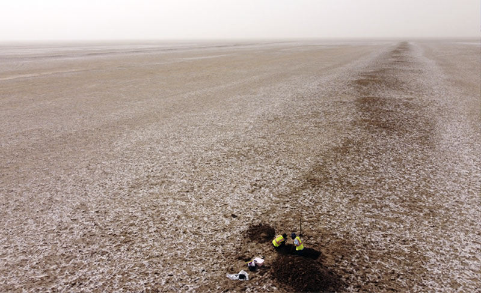
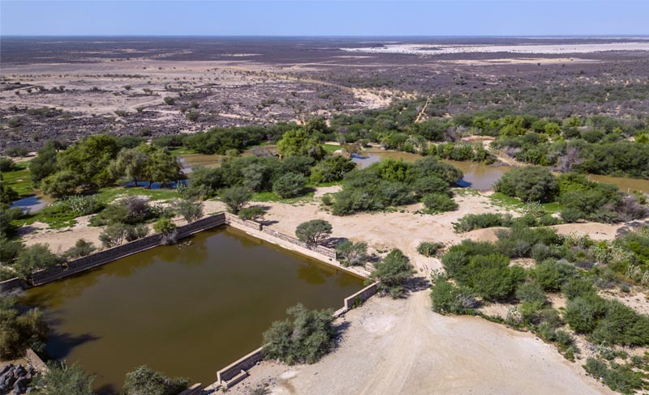

Over the past few years I have led a research project investigating a medieval irrigation system in the hinterland of Basra, southern Iraq. I am currently developing further projects to explore how this agricultural system was cultivated in the past in greater detail.

I am involved in several research collaborations investigating aspects of the pilgrimage road known as the 'Darb Zubayda' between Iraq and Mecca during the early Islamic period. As well as a conduit for pilgrims, the route network also played an important commercial role and sites along its length facilitated the flow of traffic through an otherwise inhospitable terrain.